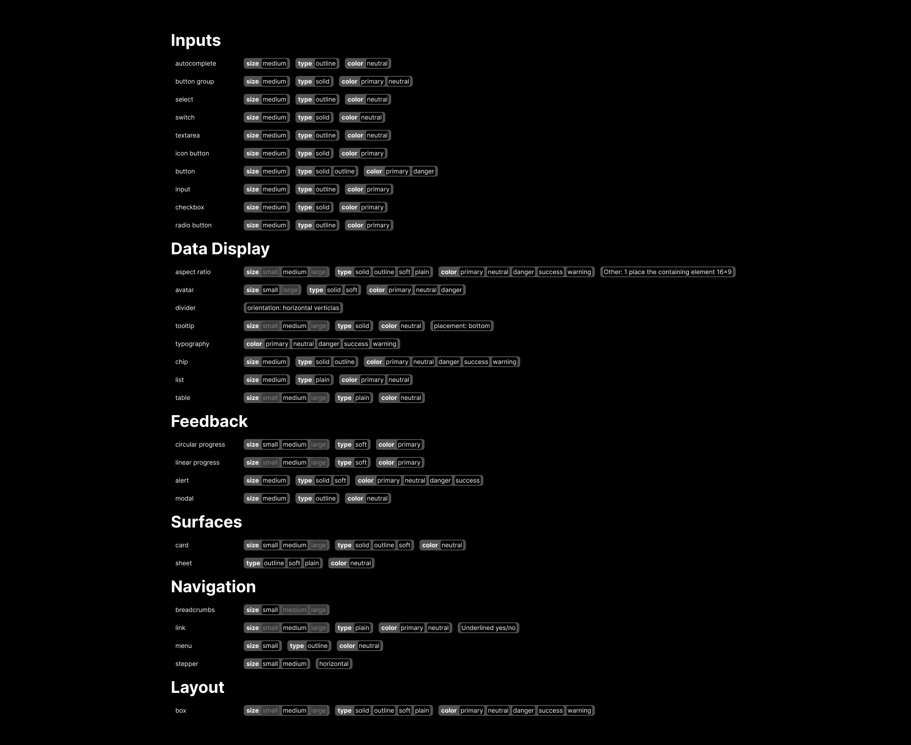
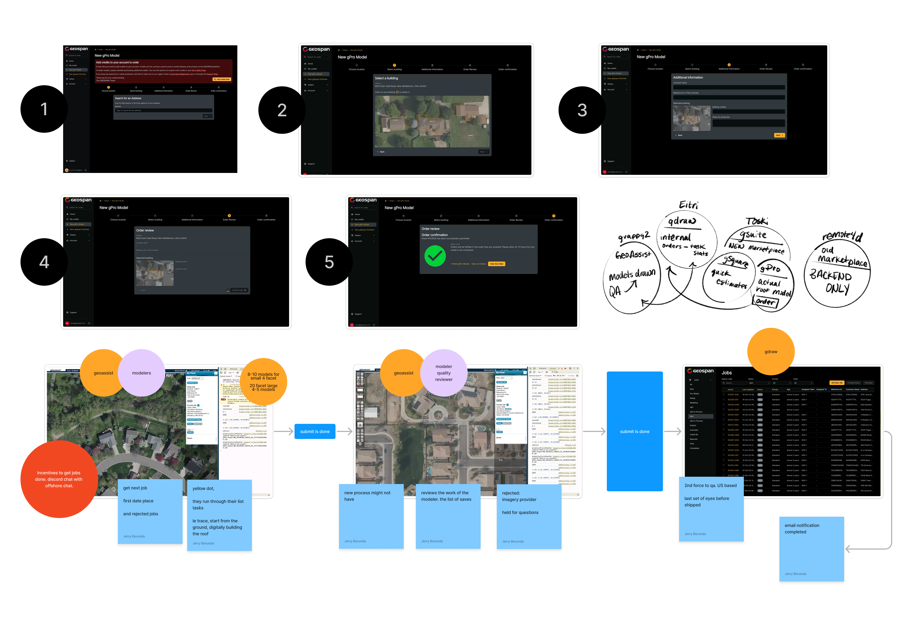
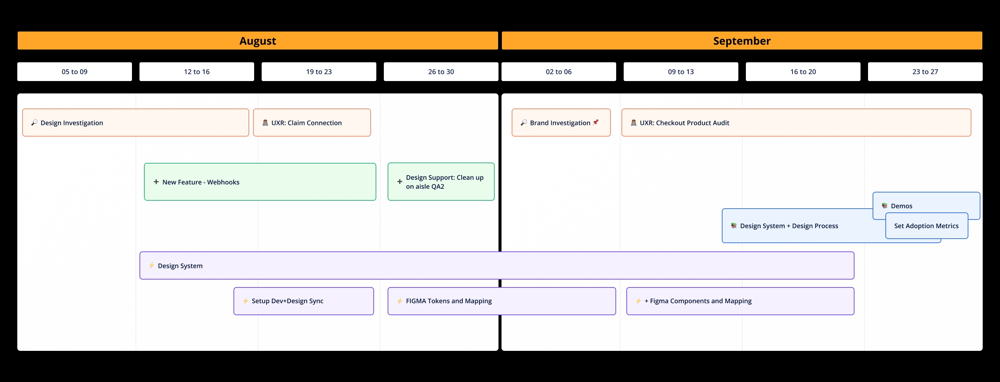
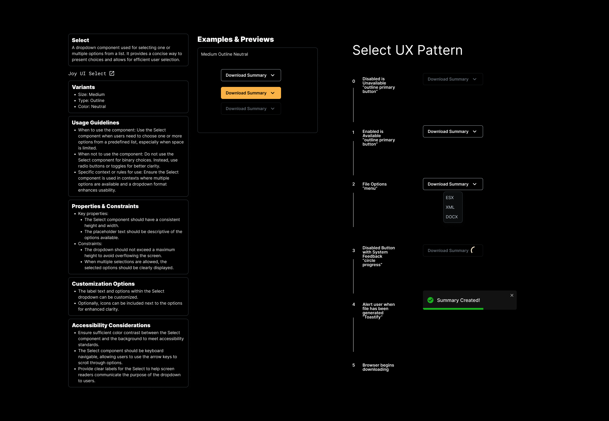
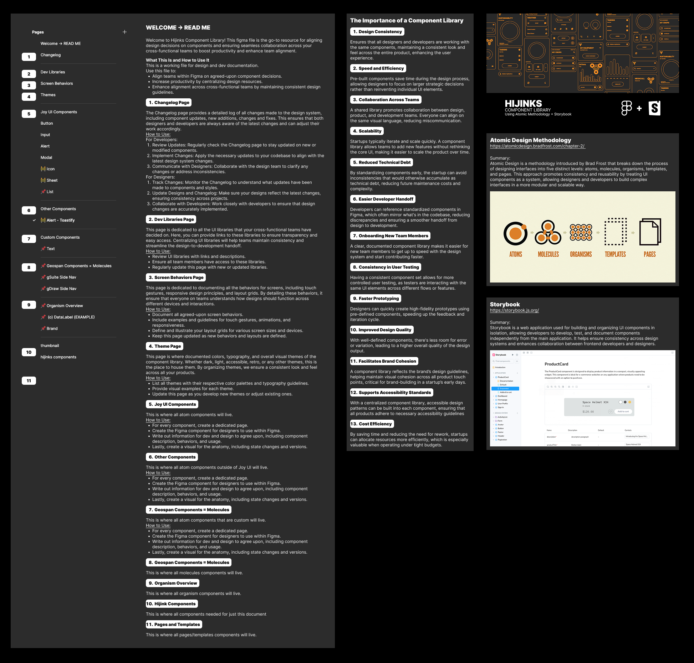
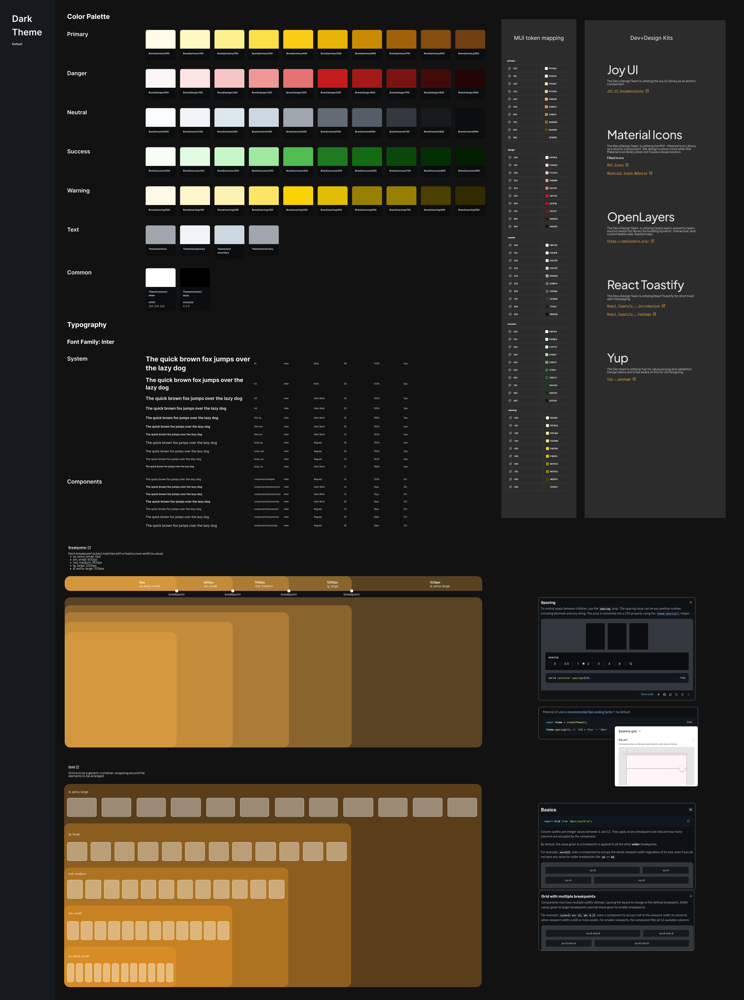

Hijinks Design System
Turning Documentation into a Living Product
Geospan’s platform ecosystem—spanning everything from 3D-roof purchasing modules to complex roof-building estimation tools and analytics dashboards—was crippled by a classic tech-org disease: fragmented, buried, and broken documentation. I stepped in as the Lead Architect to transform our documentation from a forgotten static page into a high-powered, living digital product. We built an entirely searchable, centralized home for patterns, components, accessibility guidelines, token mappings, and decision histories, embedding it directly into the daily engineering and design workflow.
Fragmented Blueprints & Wasted Hours
Without a single source of truth for our user interface patterns, Geospan was burning valuable product velocity on repetitive work:
The Documentation Desert
Existing component pages were wildly inconsistent, incomplete, and completely separated from live code examples, leaving developers guessing during implementation.
The "Why" Factor
Product managers and designers lacked any record of design rationale. Without knowing why a specific pattern was built a certain way, teams kept accidentally creating unnecessary forks and duplicate components.
The Onboarding Tax
Onboarding new designers and developers was a long, grueling process, leading to frequent reimplementation incidents where legacy patterns were accidentally rebuilt over and over.
Figma + Joy UI mapping

The Blueprint Framework
We didn't just write more text; we engineered a scalable, 5-part anatomical blueprint for every single component and pattern in Geospan's ecosystem. Every component page was standardized into a strict, predictable layout:
Purpose
The core why and user rationale behind the element.
Anatomy
A clear visual breakdown of the component’s structural zones and states.
Tokens Used
The exact semantic color, spacing, and typographic properties assigned to it.
Accessibility
Explicit instructions covering keyboard navigation, screen-reader behavior, and contrast rules.
Do / Don’t Layouts
Explicit, visual side-by-side examples showing proper vs. improper usage guidelines.
The Quick-Start Engine
We designed interactive onboarding checklists and dedicated guides tailored specifically for complex, frequent tasks—such as manipulating vector-editing map components or styling spatial map layers.
The 3-Tier Token & Tool Synchronization
We implemented a unified 3-tier token system (core, semantic, and component) backed by an automated pipeline that synced properties seamlessly between design files and codebases, completely modernizing the top 20 highest-traffic UI components.
Multiple product audit session

Tight timeline for the design system launch

Digging Into the Workflow
We built our documentation engine using strict, user-centered product methodologies:
The Discovery Loop
Conducted exhaustive interviews with frontline designers, engineers, and PMs to map out exactly where their day-to-day workflow friction was happening.
The 40-Component Audit
Dissected over 40 active components and patterns across our platforms to identify structural inconsistencies.
The Pilot Blueprint
Created reusable documentation templates and ran a pilot program utilizing our highest-traffic components to prove out the framework's layout.
The Deployment Cadence
Rolled out the live documentation site alongside hands-on training sessions and internal adoption metrics to make sure the system stuck.
Component example with UX pattern

Seamless Alignment
By treating documentation as an active product rather than a chore, we fundamentally shifted Geospan's development efficiency:
Reimplementations Slashed
Duplicate component creations and accidental UI rebuilds plummeted by ~60% within just two quarters, tracked directly via pull request review tags.
Automatic Accessibility
Accessibility became a natural byproduct of the design process rather than a separate QA step, drastically increasing compliance across all product interfaces.
Unified Workspace
Designers and engineers finally stopped bouncing between disconnected files, operating out of a unified, synchronized pipeline.
Figma welcome and read-me

Tokens for the default dark theme

Lessons & Next Steps
The Hard Lesson
Documentation will die if it lives in a silo. You have to embed your guidelines directly inside the everyday tools your teams are already using (like Figma libraries and Jira tickets) so they don't have to go hunting for answers.
The Horizon
The next milestone is data-driven optimization—integrating basic analytics onto our documentation pages to track which components get viewed the most and where users are getting stuck, allowing us to proactively improve the system.